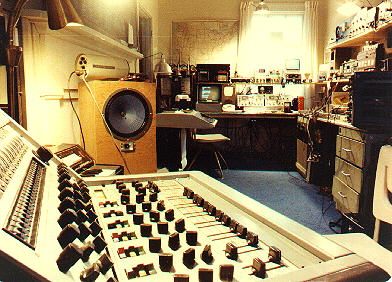

This is the house where I lived in in Mississippi.
It was less than two miles out of town, but it felt like it was
in the middle of nowhere.
I had a 100' tower out back that held my ham-radio antennas, including
a 10GHZ microwave video link to the Media Center studios where I was Chief Engineer.
There were almost six acres, part meadow, part forest, including a pond where
you would find deer occasionally.
And we left this for Hollywood!...?

This was my workshop in Oxford.
You can see the Ham-Radio rig and computer stuff in the distance,
and the 14x6 audio board I built in the foreground.
I had some old Ampex surplus 1" multitrack audio recorders that
I used to fiddle around with.
All images Copyright © Dave Sieg
Back to Dave's History Page
Please email me for more info: dave@zfx.com